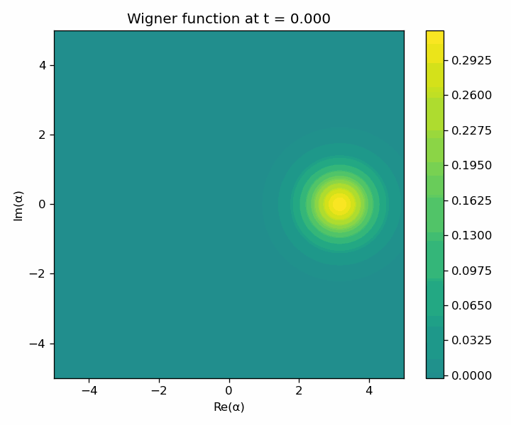
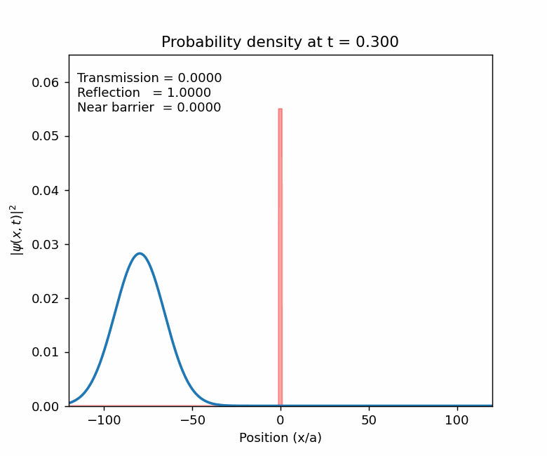

Quantum Dynamics
Hamiltonians, States, and Quantum Evolution
This page presents selected quantum-mechanical systems through their Hamiltonians, physical interpretations, and numerical animations. The current examples include Kerr nonlinear phase-space evolution and one-dimensional quantum tunneling.
Kerr Nonlinearity
Kerr Hamiltonian
The Kerr Hamiltonian describes a nonlinear optical system where the energy shift depends on the photon number. The first term corresponds to the ordinary harmonic oscillator contribution, while the second term introduces the nonlinear Kerr interaction.
Since \[ \hat{a}^{\dagger}\hat{a}^{\dagger}\hat{a}\hat{a} = \hat{n}(\hat{n}-1), \] the nonlinear part gives a photon-number-dependent phase evolution. Therefore, different photon-number components of the initial state acquire different phases during time evolution.
Initial Coherent State
The initial state used in the animation is a coherent state. In the photon number basis, the coherent state is represented as
In this simulation, the coherent-state parameter is chosen as \(\alpha=\sqrt{\bar{n}}\), where \(\bar{n}=5\). Therefore, \(\alpha=\sqrt{5}\), and the average photon number of the initial state is 5.
Physical Interpretation
A coherent state initially has a Gaussian-like Wigner function in phase space. Under Kerr evolution, the nonlinear photon-number-dependent phases distort this phase-space distribution. As time progresses, the Wigner function develops interference structures and nonclassical features.
\(\omega\): oscillator frequency
\(\chi\): Kerr nonlinear coupling strength
\(\hat{a}, \hat{a}^{\dagger}\): annihilation and creation operators
\(\hat{n} = \hat{a}^{\dagger}\hat{a}\): photon number operator
\(|\alpha\rangle\): coherent state
\(|n\rangle\): photon number state

Wigner function evolution of a coherent state under Kerr nonlinearity.
Quantum Tunneling
One-Dimensional Barrier Hamiltonian
This Hamiltonian describes a particle moving in one dimension under the influence of a spatially dependent potential barrier. In the simulation, the potential is a rectangular barrier centered at the origin.
Initial Wave Packet
The initial state is a Gaussian wave packet moving toward the barrier from the left. It can be written in the form
The kinetic energy of the packet is chosen below the barrier height, \(E = 0.95V_0\). Classically, a particle with energy lower than the barrier height would be reflected. Quantum mechanically, part of the wave packet can still pass through the barrier.
Physical Interpretation
The animation shows the probability density \(|\psi(x,t)|^2\) as the wave packet approaches the barrier, partially reflects, and partially transmits. The transmitted part represents quantum tunneling, which has no direct classical analogue.
\(V_0\): barrier height
\(E\): initial wave-packet energy
\(\sigma\): spatial width of the Gaussian packet
\(x_0\): initial packet center
\(k_0\): central wave number
\(|\psi(x,t)|^2\): probability density

Time evolution of a Gaussian wave packet tunneling through a rectangular potential barrier.